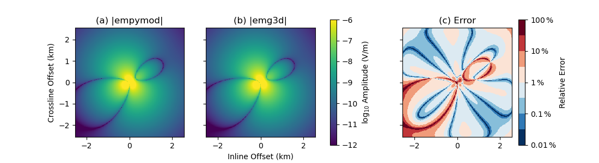

Note
Click here to download the full example code
5. empymod: 1D VTI Laplace-domain¶
1D VTI comparison between emg3d and empymod in the Laplace domain.
The code empymod is an open-source code which can model CSEM responses for
a layered medium including VTI electrical anisotropy, see emsig.xyz.
Content:
Full-space VTI model for a finite length, finite strength, rotated bipole.
Layered model for a deep water model with a point dipole source.
Both codes, empymod and emg3d, are able to compute the EM response in
the Laplace domain, by using a real value \(s\) instead of the complex
value \(\mathrm{i}\omega=2\mathrm{i}\pi f\). To compute the response in
the Laplace domain in the two codes you have to provide negative values for the
freq-parameter, which are then considered s-value.
import emg3d
import empymod
import numpy as np
import matplotlib.pyplot as plt
1. Full-space VTI model for a finite length, finite strength, rotated bipole¶
In order to shorten the build-time of the gallery we use a coarse model.
Set coarse_model = False to obtain a result of higher accuracy.
coarse_model = True
Survey and model parameters¶
# Receiver coordinates
if coarse_model:
x = (np.arange(256))*20-2550
else:
x = (np.arange(1025))*5-2560
rx = np.repeat([x, ], np.size(x), axis=0)
ry = rx.transpose()
frx, fry = rx.ravel(), ry.ravel()
rz = -400.0
azimuth = 33
elevation = 18
# Source coordinates, frequency, and strength
source = emg3d.TxElectricDipole(
coordinates=[-50, 50, -30, 30, -320., -280.], # [x1, x2, y1, y2, z1, z2]
strength=3.1, # A
)
sval = -7 # Laplace value
# Model parameters
h_res = 1. # Horizontal resistivity
aniso = np.sqrt(2.) # Anisotropy
v_res = h_res*aniso**2 # Vertical resistivity
1.a Regular VTI case¶
empymod¶
Note: The coordinate system of empymod is positive z down, for emg3d it is positive z up. We have to switch therefore src_z, rec_z, and elevation.
# Compute
epm = empymod.bipole(
src=np.r_[source.coordinates[:4], -source.coordinates[4:]],
depth=[],
res=h_res,
aniso=aniso,
strength=source.strength,
srcpts=5,
freqtime=sval,
htarg={'pts_per_dec': -1},
rec=[frx, fry, -rz, azimuth, -elevation],
verb=3,
).reshape(np.shape(rx))
Out:
:: empymod START :: v2.0.6
depth [m] :
res [Ohm.m] : 1
aniso [-] : 1.41421
epermH [-] : 1
epermV [-] : 1
mpermH [-] : 1
mpermV [-] : 1
> MODEL IS A FULLSPACE
direct field : Comp. in wavenumber domain
s-value [Hz] : 7
Hankel : DLF (Fast Hankel Transform)
> Filter : Key 201 (2009)
> DLF type : Lagged Convolution
Loop over : Frequencies
Source(s) : 1 bipole(s)
> intpts : 5
> length [m] : 123.288
> strength[A] : 3.1
> x_c [m] : 0
> y_c [m] : 0
> z_c [m] : 300
> azimuth [°] : 30.9638
> dip [°] : -18.9318
Receiver(s) : 65536 dipole(s)
> x [m] : -2550 - 2550 : 65536 [min-max; #]
> y [m] : -2550 - 2550 : 65536 [min-max; #]
> z [m] : 400
> azimuth [°] : 33
> dip [°] : -18
Required ab's : 11 12 13 21 22 23 31 32 33
:: empymod END; runtime = 0:00:11.382703 :: 45 kernel call(s)
emg3d¶
if coarse_model:
min_width_limits = 40
stretching = [1.045, 1.045]
else:
min_width_limits = 20
stretching = [1.03, 1.045]
# Create stretched grid
grid = emg3d.construct_mesh(
frequency=-sval,
properties=h_res,
center=source.center,
domain=([-2500, 2500], [-2500, 2500], [-1400, 700]),
min_width_limits=min_width_limits,
stretching=stretching,
)
grid
Out:
:: emg3d START :: 23:17:30 :: v1.0.0
MG-cycle : 'F' sslsolver : False
semicoarsening : False [0] tol : 1e-06
linerelaxation : False [0] maxit : 50
nu_{i,1,c,2} : 0, 2, 1, 2 verb : 4
Original grid : 80 x 80 x 64 => 409,600 cells
Coarsest grid : 5 x 5 x 2 => 50 cells
Coarsest level : 4 ; 4 ; 5
[hh:mm:ss] rel. error [abs. error, last/prev] l s
h_
2h_ \ /
4h_ \ /\ /
8h_ \ /\ / \ /
16h_ \ /\ / \ / \ /
32h_ \/\/ \/ \/ \/
[23:17:40] 3.356e-02 after 1 F-cycles [4.178e-05, 0.034] 0 0
[23:17:42] 3.394e-03 after 2 F-cycles [4.225e-06, 0.101] 0 0
[23:17:43] 4.423e-04 after 3 F-cycles [5.506e-07, 0.130] 0 0
[23:17:45] 6.473e-05 after 4 F-cycles [8.059e-08, 0.146] 0 0
[23:17:46] 1.009e-05 after 5 F-cycles [1.257e-08, 0.156] 0 0
[23:17:48] 1.640e-06 after 6 F-cycles [2.042e-09, 0.163] 0 0
[23:17:49] 2.751e-07 after 7 F-cycles [3.426e-10, 0.168] 0 0
> CONVERGED
> MG cycles : 7
> Final rel. error : 2.751e-07
:: emg3d END :: 23:17:49 :: runtime = 0:00:19
Plot¶
e3d = efield.get_receiver((rx, ry, rz, azimuth, elevation))
# Start figure.
a_kwargs = {'cmap': "viridis", 'vmin': -12, 'vmax': -6,
'shading': 'nearest'}
e_kwargs = {'cmap': plt.cm.get_cmap("RdBu_r", 8),
'vmin': -2, 'vmax': 2, 'shading': 'nearest'}
fig, axs = plt.subplots(1, 3, figsize=(11, 3), sharex=True, sharey=True,
subplot_kw={'box_aspect': 1})
ax1, ax2, ax3 = axs
x3 = x/1000 # km
# Plot Re(data)
ax1.set_title(r"(a) |empymod|")
cf0 = ax1.pcolormesh(x3, x3, np.log10(epm.amp()), **a_kwargs)
ax2.set_title(r"(b) |emg3d|")
ax2.pcolormesh(x3, x3, np.log10(e3d.amp()), **a_kwargs)
ax3.set_title(r"(c) Error")
rel_error = 100*np.abs((epm - e3d) / epm)
cf2 = ax3.pcolormesh(x3, x3, np.log10(rel_error), **e_kwargs)
# Colorbars
fig.colorbar(cf0, ax=axs[:2], label=r"$\log_{10}$ Amplitude (V/m)")
cbar = fig.colorbar(cf2, ax=ax3, label=r"Relative Error")
cbar.set_ticks([-2, -1, 0, 1, 2])
cbar.ax.set_yticklabels([r"$0.01\,\%$", r"$0.1\,\%$", r"$1\,\%$",
r"$10\,\%$", r"$100\,\%$"])
ax1.set_xlim(min(x3), max(x3))
ax1.set_ylim(min(x3), max(x3))
# Axis label
ax1.set_ylabel("Crossline Offset (km)")
ax2.set_xlabel("Inline Offset (km)")
fig.show()
print(f"- Source: {source}")
print(f"- Frequency: {sval} Hz")
print(f"- Electric receivers: z={rz} m; θ={azimuth}°, φ={elevation}°")

Out:
- Source: TxElectricDipole: 3.1 A;
e1={-50.0; -30.0; -320.0} m; e2={50.0; 30.0; -280.0} m
- Frequency: -7 Hz
- Electric receivers: z=-400.0 m; θ=33°, φ=18°
Total running time of the script: ( 0 minutes 33.191 seconds)
Estimated memory usage: 37 MB